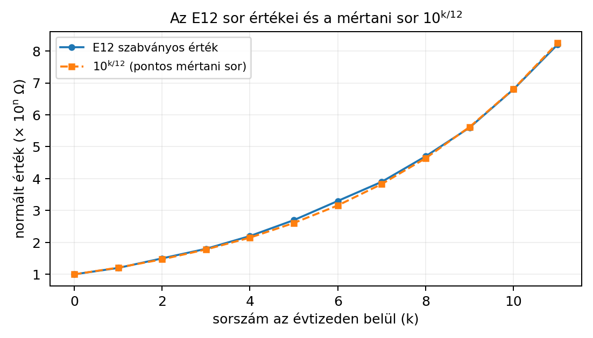
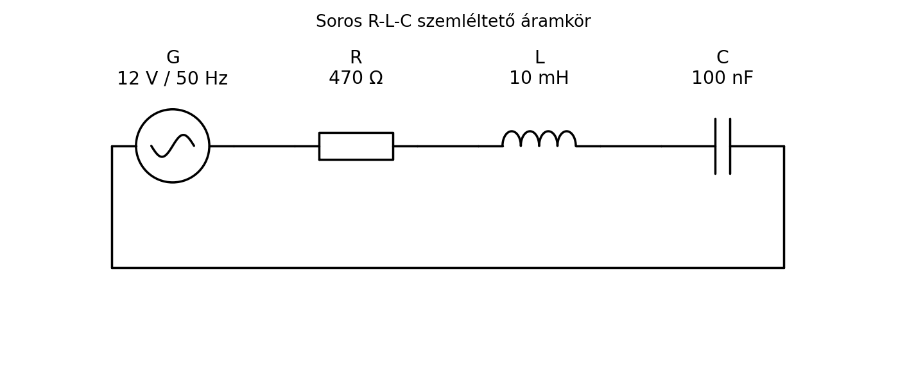

A szerelő a hibakeresés során gyakran találkozik olyan panasszal, hogy „a LED-lámpa villog”, „a ventilátor fordulatszáma nem állítható”, vagy „a tápegység kimenete búg és a feszültség nem stabil”. Ilyenkor a hibát sokszor nem a félvezető, hanem egy passzív alkatrész – ellenállás, kondenzátor vagy tekercs – okozza. Ahhoz, hogy az alkatrészt azonosítani, kicserélni vagy megfelelővel pótolni tudjuk, pontosan le kell olvasni a jelölését, ismerni kell a tűrését, terhelhetőségét és feszültségosztályát. Ebben az alfejezetben ezt a három alapvető passzív alkatrészcsaládot tanuljuk meg.
Képzelj el egy nyitott LED-tápegységet. A bemeneti oldalon egy kisméretű, kék színű, feliratozott fémoxid-ellenállás ül, mellette egy sárga fóliakondenzátor, a kimeneti oldalon pedig egy hengeres alumínium elektrolitkondenzátor. A hálózati szűrőben egy vasmagos fojtótekercs látható. Mindegyik alkatrészen vagy színsávok, vagy szám-betű kódok vannak. A szerelőnek ezekből kell megállapítania, hogy az adott alkatrész milyen értékű, mekkora feszültségre és áramra méretezett, és hogy a cserealkatrész megfelel-e.
Definíció. Passzív alkatrésznek nevezzük azokat az áramköri elemeket, amelyek nem erősítenek, nem vezérelnek aktívan, hanem az energiát tárolják, disszipálják vagy átalakítják. A három alapvető passzív alkatrész az ellenállás ( ), a kondenzátor ( ) és az induktivitás/tekercs ( ).
Definíció. Az ellenállás olyan kétkivezetésű alkatrész, amely a rajta áthaladó áram hatására feszültségesést hoz létre, és villamos energiát hővé alakít. Az ellenállás értéke ohmban ( ) van megadva.
Fajták. A leggyakoribb rögzített ellenállások:
472 jelentése
.Változtatható ellenállások. A potenciométer háromkivezetésű, tengellyel állítható ellenállás, a trimmer (utánállító) pedig kis méretű, csavarhúzóval állítható. A bekötésnél a középső kivezetés a csúszka; a másik kettő a pálya vége.
Jelölés: színkód. A kivezetéses (THT) ellenállásokon gyakran négy vagy öt színsáv van. A négy sávos kód első két sávja az első két számjegy, a harmadik a szorzó (tíz hatványa), a negyedik a tűrés. Öt sávosnál az első három sáv számjegy, a negyedik a szorzó, az ötödik a tűrés. A színek értékei:
| Szín | Számjegy | Szorzó | Tűrés |
|---|---|---|---|
| Fekete | 0 | – | |
| Barna | 1 | ±1 % | |
| Vörös (piros) | 2 | ±2 % | |
| Narancs | 3 | – | |
| Sárga | 4 | – | |
| Zöld | 5 | ±0,5 % | |
| Kék | 6 | ±0,25 % | |
| Ibolya (lila) | 7 | ±0,1 % | |
| Szürke | 8 | ±0,05 % | |
| Fehér | 9 | – | |
| Arany | – | ±5 % | |
| Ezüst | – | ±10 % |
A kék, ibolya és szürke sáv tűrésértéke az ötsávos precíziós ellenállásokon fordul elő; a „–” jelölésű színek nem tűrésszínek (ellenőrizendő: IEC 60062).
E-sorok. A gyártók nem minden elképzelhető értéket gyártanak, hanem az IEC 60063 szerinti E6, E12, E24, E48, E96 sorokat. Az E12 sor egy évtizeden belül 12 értéket ad: 1,0; 1,2; 1,5; 1,8; 2,2; 2,7; 3,3; 3,9; 4,7; 5,6; 6,8; 8,2. A következő évtizedben ezek tízszeresei következnek.
Definíció. A kondenzátor két, szigetelővel elválasztott vezető lemezből áll, és villamos energiát tárol a dielektrikumban létrejövő villamos térben. A kapacitás egysége a farad (F); a gyakorlatban , és nagyságrendeket használunk.
Fajták.
Jelölés. A kerámia és fóliakondenzátorokon gyakran
háromjegyű számkód van: az első két számjegy az érték, a harmadik a tíz
kitevője, az eredmény pF-ban értendő. Például 104 =
.
A betű a tűrés, a feszültség pedig külön felirat vagy kód. Az
elektrolitkondenzátoron általában közvetlenül szerepel a kapacitás és a
feszültség, például 470 µF 35 V.
Definíció. A tekercs (induktivitás) olyan passzív alkatrész, amely az áram változása ellen hat, és energiát tárol a mágneses térben. Az induktivitás egysége a henry (H); a gyakorlatban , és H.
Fajták és jellemzők.
Minősítő jellemzők. Egy tekercs kiválasztásakor a következő adatokat kell ismerni:
A szerelő az alkatrészt először a tokozásáról ismeri fel. Az alábbi
tabló a leggyakoribb kiviteleket mutatja: az ellenállások közül az 1
kivezetéses rétegellenállást színsávokkal, a 2 kerámia tokos
huzalellenállást közvetlen felirattal (0R47 = 0,47 Ω), a 3
SMD chipet számkóddal, a 4 potenciométert (a 2-es kivezetés a csúszka)
és az 5 trimmert; a kondenzátorok közül a 6 kerámia tárcsát
(104), a 7 feliratlan MLCC chipet, a 8 polaritás nélküli
fóliakondenzátort, a 9 alumínium elektrolitkondenzátort a negatív oldalt
jelölő sávval és rövidebb lábbal, valamint a 10 motorüzemi kondenzátort;
végül a 11 toroid fojtót, a 12 közös módusú fojtót és a 13 lemezelt
vasmagos fojtót.
Csere előtt mindig vesd össze a tokozást és a feliratot: azonos kapacitású, de polaritásos elektrolitkondenzátor nem helyettesítheti a motorüzemi vagy a hálózati zavarszűrő (X2) fóliakondenzátort. A HTML-kiadásban a számokra mutatva megjelenik az egyes tokozások neve és leolvasási tudnivalója.
Szabály. Ellenállás színkódjának leolvasása:
a tűrést az utolsó sáv adja.
Példa. Négy sávos ellenállás színei: sárga, lila, piros, arany.
Számítás. Kondenzátor kódjának értelmezése. Legyen a
felirat: 104K 100V.
A K betű ±10 % tűrést jelent, a 100V a
névleges egyenfeszültség. Tehát a kondenzátor
,
legfeljebb
feszültségre.
Számítás. Előtétellenállás kiválasztása LED-hez. Adott , a LED nyitófeszültsége , a kívánt áram .
Kerekítési szabály. A LED árama ne lépje túl a megengedettet, ezért a számított értéknél a következő nagyobb E12-es értéket választjuk. Itt a fölötti legközelebbi E12-es érték . Ezzel az áram:
A disszipált teljesítmény:
A csak kb. 1,4-szeres tartalék, ezért a gyakorlatban (az 1,5–2-szeres tartalék szabálya szerint) teljesítményű ellenállást választunk.
Számítás. Tekercs időállandója. Legyen , . Az RL-tag időállandója (lásd Elektromágneses indukció, önindukció és az RL-tag alfejezetet):
Ha a tekercsen egyenáram folyik, az egyenáramú feszültségesés .

Ábra. Az alábbi kapcsolási rajz a három passzív alkatrész rajzjelét mutatja egy soros R-L-C áramkörben:

Interaktív ábra. A HTML-kiadás színkód- és
kondenzátorjelölés-kalkulátorában a tanuló kiválaszthatja a színsávokat
(4 vagy 5 sávos ellenállásra), és a program kiírja az ellenállás
névleges értékét, tűrését és a megengedett értéktartományt. Ugyanezen az
oldalon beírhatja a kondenzátor háromjegyű kódját (például
104K 100V), mire a kalkulátor megjeleníti a pF-ban és a
gyakorlatias egységben kifejezett kapacitást, a tűrésbetű jelentését és
a névleges feszültséget; egy beírt ohmértékhez a legközelebbi E12/E24
értéket is megadja. A statikus ábra a két kidolgozott ellenállás-példát
(sávonként a szín nevével és értékével) és a 104K 100V
felirat bontását mutatja.
Szabály. Ellenállás kiválasztásakor a következőket ellenőrizd:
Szabály. Kondenzátor kiválasztása:
A polaritás és az élettartam okát az elektrolitkondenzátor felépítése magyarázza. Az alábbi ábra (a) részén az alumíniumházban felcsévélt tekercs látható: az anódfólián lévő vékony oxidréteg a dielektrikum, a katódfóliát elektrolittal átitatott papír választja el tőle; alul gumidugó zár, a tetőn biztonsági bemetszés van. A (b) rész egy ép és egy felpúposodott tetejű kondenzátort, a (c) rész a helyes és a fordított beültetést mutatja: a negatív sáv a panel „−” jele felé kerül.
A fordított polaritás az oxidréteget leépíti, a kondenzátor melegszik, gázt fejleszt, és a bemetszésnél kinyílik; a felpúposodott tető ugyanennek a folyamatnak (vagy a meleg környezet okozta öregedésnek) a jele. Cserét csak leválasztott, kisütött és feszültségmentesnek mért készüléken végezz, azonos vagy jobb adatú (kapacitás, feszültség, hőmérséklet) típusra. A HTML-kiadásban a három részt egyenként léptetheted.
Szabály. Tekercs kiválasztása:
Szabvány. A passzív alkatrészek értéksorát és tűréseit nemzetközileg az IEC 60063 (E-sorok) rögzíti; a színkód leolvasásához a gyártói adatlapok és az IEC 60062 szerinti jelölés használható. A kondenzátorok és ellenállások biztonsági követelményeit a vonatkozó termékszabványok tartalmazzák; a pontos szabványszámot és a legújabb kiadást mindig ellenőrizni kell (ellenőrizendő: aktuális IEC/EN termékszabványok). A beépítésre kerülő alkatrésznek meg kell felelnie a berendezés szabványának (például MSZ EN 60335 háztartási készülékek, MSZ EN 60204 gépek villamos berendezései).
Egy ügyfél azt panaszolja, hogy a mosógép vezérlőpanelje néha
újraindul. (Biztonsági korlát. Ilyen munkát csak
képzett, jogosult szakember végezhet; a készüléket előbb le kell
választani a hálózatról, a primer oldali puffer-kondenzátort ki kell
sütni, és a feszültségmentességet mérni kell.) A szerelő a hálózatról
leválasztott, kisütött és feszültségmentesnek mért vezérlőt megbontja,
és azt látja, hogy a tápegység kimenetén lévő elektrolitkondenzátor
teteje domború, a műanyag burkolat megrepedt. A jelölés
1000 µF 10 V. A szerelő multiméterrel kapacitásmérő
üzemmódban csak
értéket mér; a kondenzátor kiszáradt. A cserealkatrészt
1000 µF 16 V feszültségű, 105 °C-os, hosszú élettartamú
típusra választja. A javítás után a panel stabilan működik. A tanulság:
az elektrolitkondenzátorok öregednek, és a feszültségtartalék, valamint
a magasabb hőmérsékleti osztály növeli az élettartamot.
Egy másik esetben egy fűtőbetét vezérlésében huzalellenállás égett ki. A szerelő a pótlást nem közönséges szénréteg-ellenállással végezte, hanem ugyanolyan huzalellenállással, mert a kapcsolás nagy impulzusáramot kapcsol.
Hiba 1: rossz tűrésű ellenállás beépítése. Ha egy mérőosztóban 1 %-os ellenállás helyett 10 %-os szénréteget építünk be, a mérés pontatlan lesz. Helyes gyakorlat: a kapcsolási rajzon előírt tűrést és hőmérsékleti együtthatót tartsuk be.
Hiba 2: elektrolitkondenzátor fordított bekötése. A polaritás felcserélésekor a kondenzátor felmelegszik, kiforrhat, sőt fel is robbanhat. Helyes gyakorlat: bekötés előtt mindig ellenőrizd a panelen és a kondenzátoron a polaritásjelölést; a negatív sáv és a rövidebb kivezetés általában a negatív.
Hiba 3: tekercs telítési áramának figyelmen kívül hagyása. Kapcsolóüzemű tápegységben, ha a fojtó telítődik, az induktivitás lecsökken, az áram hirtelen megnő, és a kapcsolóelem tönkremehet. Helyes gyakorlat: ellenőrizd a gyártói adatlap telítési áramát, és válassz nagyobb magot vagy más típust, ha a csúcsáram közel van hozzá.
Hiba 4: a terhelhetőség alulméretezése. A számított disszipációhoz pontosan -os ellenállást választunk tartalék nélkül, és az zárt dobozban túlmelegszik (a tartalék csak kb. 1,4-szeres). Helyes gyakorlat: legalább 1,5–2-szeres teljesítménytartalék (zárt, meleg dobozban inkább a 2-szeres), és a környezeti hőmérsékletet is vegyük figyelembe. A disszipációhoz ezért -os ellenállás való.
224K 50V jelölés egy
kerámiakondenzátoron?1. feladat (A)
Olvasd le az öt sávos ellenállást: piros, fekete, fekete, barna, barna.
Add meg az értéket és a tűrést.
2. feladat (A)
Egy kondenzátor felirata 4700 µF 35 V. Értelmezd a
jelölést, és sorold fel, milyen típusú kondenzátorról van szó, mire kell
figyelni a beépítésnél.
3. feladat (B)
Egy
-os
egyenáramú hálózatban egy LED-hez előtétellenállást kell választani. A
LED nyitófeszültsége
,
a megengedett áram
.
Számítsd ki a szükséges ellenállást, válassz E12 értéket, és ellenőrizd
a disszipált teljesítményt. Mekkora névleges teljesítményű ellenállást
választanál?
4. feladat (B)
Egy soros RC-tagban
,
.
Számítsd ki az időállandót. Mennyi idő alatt éri el a kondenzátor
feszültsége a tápfeszültség
-át?
5. feladat (C)
Egy tápegység bemeneti szűrőfojtójának (egyszerű, differenciális fojtó,
egy tekerccsel) induktivitása
,
egyenáramú ellenállása
.
A fojtón üzemszerűen
folyik. Számítsd ki az egyenáramú feszültségesést és az időállandót.
Miért fontos a telítési áram ellenőrzése?
6. feladat (D)
Egy kapcsolóüzemű tápegység kimenete búg, a feszültség terhelés alatt
letörik. A szerelő azt gyanítja, hogy a kimeneti elektrolitkondenzátor
kiszáradt. Milyen méréseket végeznél? Milyen értékeket várnál jó és
rossz kondenzátornál? A csere során milyen feszültségű és hőmérsékletű
alkatrészt választanál?
Önellenőrzés – válaszok
224K =
,
K = ±10 %,
névleges feszültség.1. feladat megoldása (A)
Piros = 2, fekete = 0, fekete = 0, tehát a háromjegyű szám 200. Barna
szorzó =
,
tehát
.
Az ötödik sáv barna = ±1 %. Tehát
,
azaz
és
között.
2. feladat megoldása (A)
A 4700 µF 35 V alumínium elektrolitkondenzátort jelöl,
névleges kapacitása
,
névleges egyenfeszültsége
.
Beépítéskor ügyelni kell a polaritásra: a negatív jelölősáv és a
rövidebb kivezetés a negatív kivezetés, a hosszabb a pozitív. A
kapcsolásban a maximális feszültség nem haladhatja meg a
-ot.
3. feladat megoldása (B)
Adott:
,
,
.
Keresett:
.
Képlet:
.
Behelyettesítés:
.
A számított értéknél a következő nagyobb E12-es érték
(a LED árama így nem lépi túl a megengedettet, lásd a
LED-előtétellenállás számításánál a Kerekítési szabályt).
Ellenőrzés az E12 értékkel:
,
.
Választás: a
a minimális 1,5-szeres tartalékot teljesíti
(-szeres);
zárt dobozban
ajánlott. A LED árama a megengedettnél kicsit kisebb, ami
biztonságos.
4. feladat megoldása (B)
.
A kondenzátor feszültsége
idő alatt éri el a tápfeszültség
-át.
Tehát
alatt.
5. feladat megoldása (C)
Egyenáramú feszültségesés:
.
Időállandó:
.
A telítési áram azért fontos, mert a csúcsáram telítheti a magot: az
induktivitás lecsökken, a szűrés megszűnik, és az áramcsúcs megnő, ami
tönkreteheti a kapcsolóelemet.
Megjegyzés. Közös módusú fojtónál a két tekercs az üzemi (differenciális) áramot ellentétes irányban vezeti, a fluxusok kioltják egymást, ezért a közös módusú induktivitás az üzemi áramra nem hat, és az üzemi áram a magot nem telíti; ott az ellenállásokon eső feszültség mindkét tekercsen jelentkezik (tekercsenként esetén ), a telítést a közös módusú zavaráram és a két tekercs aszimmetriája okozhatja.
6. feladat megoldása (D)
Biztonsági korlát. A feladat tanműhelyi környezetre
vagy jogosult oktató felügyeletére vonatkozik; hálózati feszültségen
önállóan ne végezd. Mérés és csere előtt a készüléket válaszd le a
hálózatról (dugó kihúzva, visszakapcsolás ellen biztosítva), várj, majd
mérd meg a primer oldali puffer-elektrolitkondenzátor feszültségét (kb.
325–400 V egyenfeszültség lehet), és ha szükséges, süsd ki ellenálláson
keresztül; a feszültségmentességet mérd meg, és csak utána nyúlj az
áramkörhöz. Feszültség alatti hullámosságmérés csak a szekunder
(törpefeszültségű) oldalon, leválasztó transzformátorról táplált vagy
differenciális szondával, felügyelet mellett végezhető; hálózati oldalon
földelt szondatesttel soha.
Mérések:
- Szemrevételezés: domború vagy repedt kondenzátorház, szivárgó
elektrolit.
- Kapacitásmérés multiméterrel: a névleges értéknél lényegesen kisebb
(például
helyett
)
kiszáradást jelez.
- ESR-mérés (ha van ESR-mérő): a jó kondenzátor ESR-je alacsony (néhány
száz mΩ), a kiszáradté magas, több ohm is lehet.
- Feszültségmérés oszcilloszkóppal: terhelés alatt nagy hullámosság
(búgás) látható.
A csere során a névlegesnél nagyobb feszültségű (például
helyett
),
hosszú élettartamú, 105 °C-os típust válasszunk, és ügyeljünk a
polaritásra, a méretre és a kivezetéstávolságra. A javítás után
terheléses próbát és hullámosságmérést végezzünk.
A passzív alkatrészek – ellenállás, kondenzátor és tekercs – az áramkörök alapvető építőkövei. Az ellenállás értékét színkóddal vagy számkóddal adják meg; a tűrés és a teljesítmény legalább annyira fontos, mint az ohmérték. A kondenzátorok közül a fólia- és kerámiatípus polaritásmentes, az elektrolitkondenzátor polaritásra érzékeny, ezért beépítésénél a polaritást és a névleges feszültséget ellenőrizni kell. A tekercs kiválasztásakor az induktivitás mellett a névleges áram, az egyenáramú ellenállás, a telítési áram és az önrezonancia-frekvencia a döntő. A jelölések leolvasása és az E-sorok ismerete alapvető szerelői készség. Továbbvitt eredmény. Az itt tanult rajzjeleket és alkatrészjelöléseket használjuk a Rajzjelek és jelölések (MSZ EN 60617) alfejezetben, az ellenállás és kondenzátor fényforrás-előtétben betöltött szerepét a Fénytechnikai alapok és fényforrások alfejezetben, a passzív alkatrészek és félvezetők együttműködését pedig a Félvezető anyagok, dióda, LED és Zener-dióda alfejezetben vizsgáljuk. A feltöltött kondenzátor veszélyes energiát tárolhat; kisütése csak feszültségmentesítés után, ellenőrzött ellenálláson keresztül történjen.
A leírt színkódok, E-sorok és számkódok az elektrotechnika klasszikus, stabil ismeretei. A pontos szabványhivatkozásokat (IEC 60062, IEC 60063, termékszabványok) és a gyártói adatlapokon szereplő határértékeket a kiadás előtt ellenőrizni kell. A példákban szereplő alkatrészértékek és mérési határértékek tanulási célúak; éles kivitelezésnél mindig az aktuális szabvány és a gyártói adatlap a mérvadó.